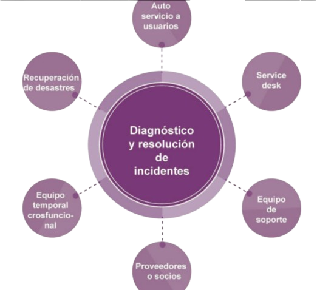
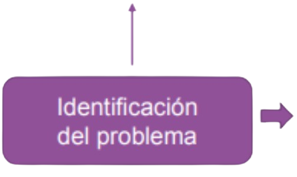
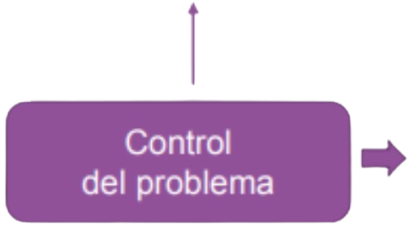
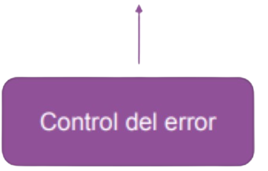
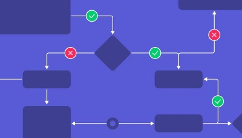

PRACTICAS GESTION DE SERVICIOS
"Incidente se refiere a una interrupción no planificada de un servicio.”
- Registrar y gestionar los incidentes
- Acordar, documentar y comunicar los tiempos objetivos de resolucion
- Priorizar los incidentes
Diseño de práctica de gestión de incidentes
Diseñar la practica de gestion de incidentes para una gestion adecuada y la asignacion de recursos a diferentes tipos de incidentes
Almacenar información sobre incidentes en los registros de incidentes
Proporcionar actualizaciones de buena calidad de los incidentes
Diagnóstico y resolución de Incidentes
“Problema se refiere a una causa, o causa potencial, de uno o más incidentes”
-
Proposito de la gestion de problemas
Reducir la probabilidad e impactos de los incidentes al identificar las causas realesGestionar soluciones y errores conocidos
¿Cómo se diferencia el problema del incidente?
| Prblemas | Incidentes |
|---|---|
| Son la causa de los incidentes | Tienen un impacto en los usuarios o procesos de negocio |
| Requiere investigación y analisis para identificar las causas, desarrollar soluciones y recomendar una resolucion de largo plazo | Deben resolver para que la actividad del negocio normal pueda continuar funcionando |
Fases de Gestión de problemas
Identificar y registrar Problemas
Analizar probelmas. Documentar soluciones y errores conocidos
Manejar errores conocidos
Identificación de problemas
- Análisis de tendencias
- Detectar problemas duplicados y recurrentes
- Identificar el riesgo de repetición de incidentes
- Analizar información de proveedores y socios
- Desarrolladores/Calidad/Proyectos
Control de problemas
-
Control de problemas:
Analizar/Soluciones/Prioridad
-
Priorización según riesgo:
Prioridad/Impacto/Causas
-
Documentación de soluciones futuras:
Soluciones/Registros/Permanente
Control de errores
-
Gestión de errores conocidos:
Errores/Soluciones/Análisis
-
Evaluación regular del estado de errores conocidos:
Evaluación/Impacto/Eficacia
-
Mejora de soluciones temporales:
Soluciones/Evaluación/Mejora
“El propósito de la práctica de control de cambios es maximizar el número de cambios exitosos de TI al:
-Asegurar que los riesgos hayan sido medidos adecuadamente
- Autorizar cambios para proceder
-Gestionando el calendario de cambios”
Distinguir el control de cambios y gestion de cambio organizacional
| Control de Cambios | Gestión del Cambio Organizacional |
|---|---|
| Se centra en los cambios de productos y servicios | Gestiona los aspectos de los cambios en las personas |
| Equilibra la necesidad de realizar cambios beneficiosos que brinden valor adicional con la necesidad de proteger a los clientes y usuarios del efecto adverso de los cambios | Asegura que las mejoras e iniciativas de transformación organizacional se implementen con éxito |
Tipos de Cambios
| Cambios estandar | Cambios Normales | Cambios de Emergencia |
|---|
Autoridad de Cambio
Todos los cambios son evaluados y autorizados por las personas que comprenden los riesgos y benefi cios esperados antes de implementar los cambios.
La persona o grupo que autoriza un cambio se conoce como una autoridad de cambio
Comunicando cambios
Calendario de Cambios
- Ayuda a Planificar Cambios
- Ayuda a la Comunicación
- Evita Conflictos
- Asigna Recursos
Ejemplos de solicitudes de servicio
Entrega de Solicitudes de Servicio
Las solicitudes de servicio forman una parte normal de la entrega del servicio y no una falla
Algunas solicitudes son muy simples
Algunas solicitudes son complejas
Independientem ente de la complejidad, los pasos para cumplir con la solicitud deben ser bien conocidos y probados
Guias de gestion de solicitud de servicio
Las solicitudes de servicio deben ser estandarizadas y automatizada
Se deben establecer políticas
Las expectativas deben ser claramente establecidas
Se deben identificar oportunidades de mejora
Deben incluirse políticas y flujos de trabajo

Actuar como el punto
de contacto para el
proveedor de servicios
junto con sus usuarios.
Proporcionar una ruta clara para que los
usuarios informen sobre asuntos,
consultas y solicitudes, y reconozcan,
clasifi quen, posean y tomen medidas al
respecto.
CANALES DEL SERVICE DESK
| Llamada telefónica | Incluye tecnología especializada como IVR, llamadas en conferencia, reconocimiento de voz |
|---|---|
| Portales de servicios y aplicaciones móviles | Soportando por catálogos de servicio y solicitud y bases de conocimientos |
| Chat | Chats en vivo y robots para chat |
| Correo electronico | Se utiliza para el registro y actualizacion, y para las encuestas y confirmaciones de seguimiento |
| Service Desk de atencion personalizada | Cada vez es mas frecuente en sectores donde hay altos picos de actividad que exigen presencia fisica, como la educacion superior |
| Mensajes de texto y redes sociales | Útil para enviar notificaciones en caso de incidencias emportantes, contactar a grupos especificos de partes interesadas y permitir a los usuarios solicicar soporte |
| Redes sociales publicas y corporativas y foros de discusión | Contacto con el proveedor de servicios y soporte de persona a persona |
Estructuras de Service Desk
Un Service Desk puede funcionar en una ubicación única o centralizada, lo que requiere varias tecnologías de soporte, tales como:
Sistemas de telefonía inteligente
Sistemas de flujo de trabajo para enrutamiento y escalamiento
Sistemas de gestión de recursos humanos y planificación de recursos
Bases de conocimiento
Grabación de llamadas y control de calidad
Herramientas de acceso remoto
Personal del service desk
El personal de la mesa de servicio requiere capacitación y competencia en una serie de amplias áreas técnicas y comerciales
PRÁCTICA DE NIVELES DE SERVICIO
La práctIca Gestión de Niveles de ServIcio (SLM)
Establecen objetivos claros basados en el negocio para el desempeño del servicio, de modo que la entrega de un servicio pueda evaluarse, monitorearse y administrarse adecuadamente en función de estos objetivos”.
Actividades clave de Gestión de Niveles de servicio
La práctica gestión de nivel de servicio implica la definición, documentación y gestión activa de los niveles de servicio.
Proporciona una visibilidad completa de los servicios de la organización. Para ello, la práctica de gestión de nivel de servicio:Establece una vista compartida de los servicios y objetivo de niveles de servicio con los clientes
Asegura que la organización cumple con los niveles de servicio definidos
Realiza revisiones de servicio
Captura e informa sobre asuntos de servicio, incluido el rendimiento frente a niveles de servicio definidos